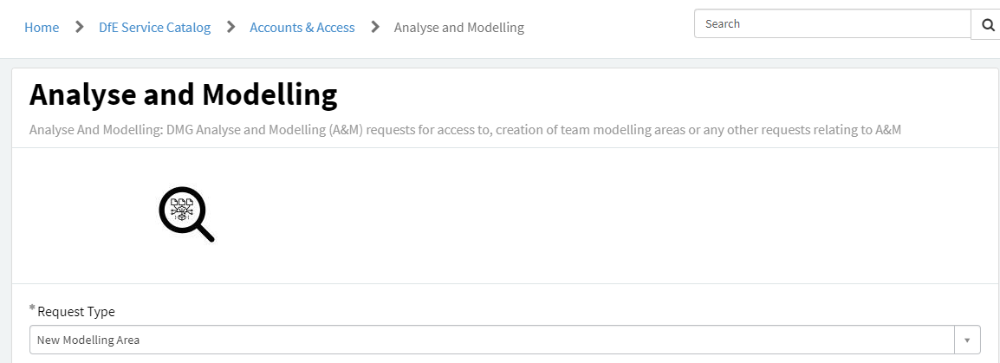

Guidance and tips for accessing data via databases with SQL
SQL or Structured Query Language, is a programming language used to talk to relational database management systems.
SQL servers are where most of DfE’s data is held, making it ideal for database management.
SQL provides us with a language primarily for querying databases to extract data, though it is also capable of some basic data processing and analysis.
Download SSMS from the DfE software center, talk to your team about getting access to the appropriate SQL servers and databases where the data you need to access is held and start writing SQL queries.
There are usually a couple of different versions available for software on the software center, we’d recommend you always go for the latest (newest) version possible.
Andy Brook’s excellent Introduction to SQL session, giving a visual overview of the basics of querying with SQL:
Here are some tips to follow best practice in your SQL code, making it easier to read and pick up if another person is running your code. Following best practice guidance will help you to achieve RAP best practice with clean final code
SSMS is the best tool to get started with writing SQL queries and saving SQL scripts that produce your desired outputs.
Once you have saved SQL scripts or are more familiar with writing SQL queries on the fly, you can look at running your scripts or lines of SQL code directly in R. This will streamline your process, saving copying and pasting SQL outputs into csvs, and ultimately help with reaching RAP best practice by aiding production of a single publication production script
This tutorial script by Tom Franklin is a particularly good starting point as it includes the data you are manipulating, so you don’t need to worry about connecting to or getting access to specific databases before you can then run anything. Simply open up Microsoft SQL Server Management Studio and start playing with that query.
Avision Ho created the this SQL training course.
The Khan academy offers a great free introduction to the basics of SQL.
It’s also worth taking a look at Jon Holman’s presentation on ‘good to know’ SQL functions.
MoJ have produced a SQL from square one guide to using CTE’s in SQL as well as running SQL from RStudio
Andy’s follow up intermediate SQL session, covering more advanced features of SQL:
Before you set up a SQL database, make sure you have the following information to pass on:
There are a few common servers that statistics producers make use of at DfE. Use the following contacts below to pass on the above information to get your new database set up:

To gain access to a SQL database, you must have written confirmation from the database owner specifying whether your access is read-only or both read and write.
If the area you require access to is in the T1PRMDRSQL,55842 SQL server, contact the PDR team with your permission attached, stating the name of the database you want access to.
If the area is in any other server, raise a request through the central IT service portal under “non-standard” > “any other request”. In your request make sure you attach the written confirmation and specify:
Information on how to do this in R can be found in our processes and RAP page